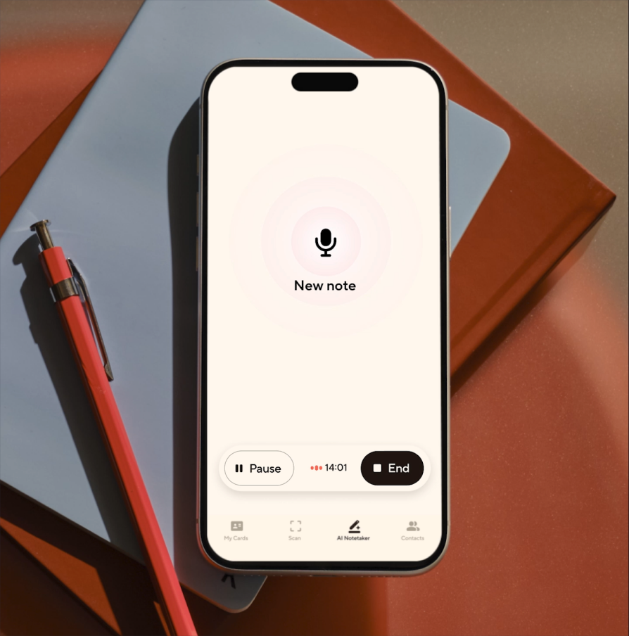
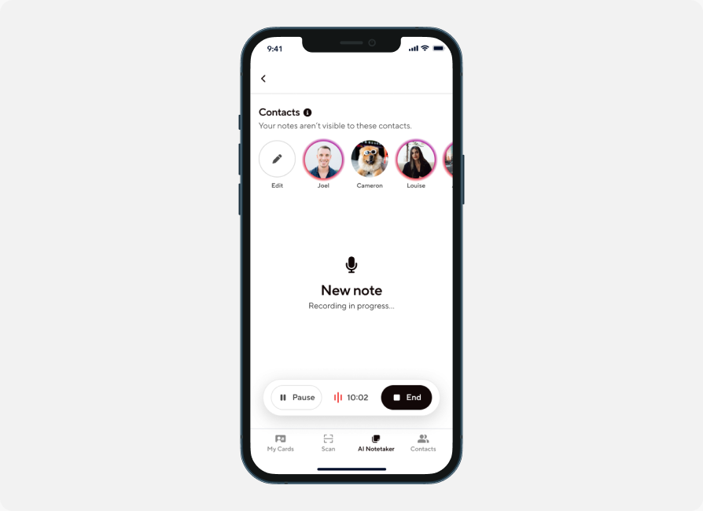
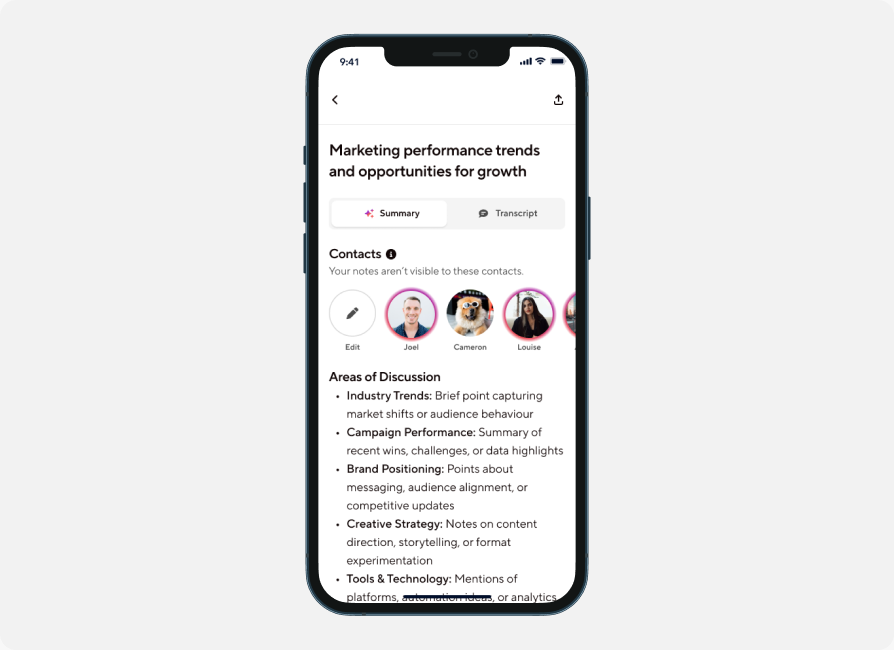
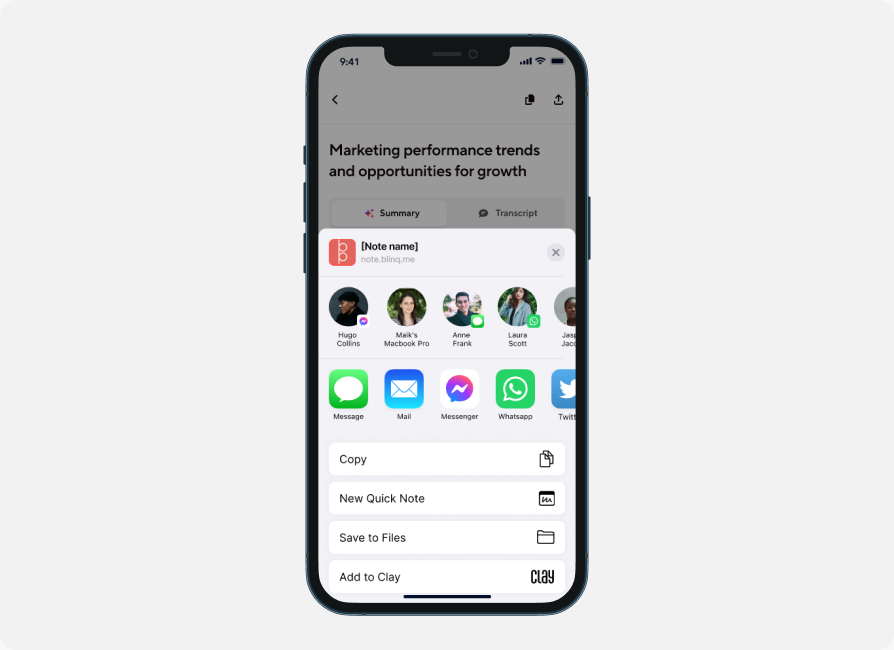
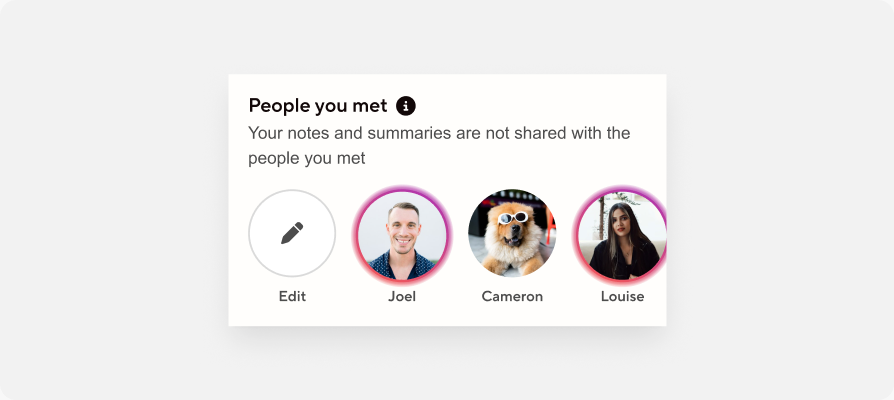

Blinq • 0-1 Design 2025
AI notetaker and closing the follow-up loop

TLDR (But you should)
Pulled from Blinq's Business team to lead this project, I designed AI Notetaker end-to-end — a feature that captures the context of in-person conversations, not just contact details, so users can follow up personally and accurately. What started as a side project now has its own team: eight engineers, a dedicated designer, and a PM.
Digital business cards solved sharing — but the context of why you met someone was getting lost.
Our existing product was strong at capturing and sharing contact details, but had no way to capture the context of a conversation — why you met someone, what was actually discussed. This gap surfaced primarily through the founder's own dogfooding of the product at conferences and meetups, reinforced by a broader product vision from our PM.
Without that context, follow-ups became generic. And in a landscape increasingly saturated with automated, bulk AI outreach, generic doesn't cut through. The bet was simple: more context leads to a more personal follow-up, which leads to stronger leads and a better chance of closing.
You meet somebody
Rich conversation
Exchange of details
Then you follow-up
Personalisation is the only thing automation can't fake.
Rather than a formal research study, this came from founder-led dogfooding — Jarrod (founder) was meeting a lot of people at events and consistently hit the same wall: no good way to capture conversation context. This was paired with product vision input from our PM to shape where the feature needed to head.
A week-long design sprint, and an assumption that turned out wrong.
Pulled from Business to lead this zero-to-one project, I kicked it off with a week-long design sprint alongside the PM and Jarrod — Blinq's founder. We knew early we wanted a recorder-based approach, inspired by Jarrod's own use of Granola.
Initial direction leaned toward bulk capture — record all day at a conference, triage contacts after. But that didn't match how most users actually operate: one-to-one conversations, day to day, not just at events. The design had to support both.

Record the moment. Let AI handle the rest.
Step 1 — Record with consent.
At a meeting or event, the user asks for consent, then starts recording the conversation. When it ends, they hit stop.

Step 2 — AI-generated summary, auto-assigned.
The app generates an AI summary of the conversation and automatically assigns it to the contact the user just met — pairing the new context with that person's existing details. Who they spoke to, their contact info, and now the substance of the conversation, all in one place.

Step 3 — Save, send, and follow up.
The note saves to that contact's profile for future reference, with the option to send it directly to the person. From there, automated follow-ups can be generated based on what was actually discussed — closing the loop from "met someone" to "personal, accurate follow-up."

What started as a zero-to-one concept became a roughly two-month build — significant for a startup — before shipping as a live feature.
Keep everything — let the user decide what's not worth keeping.
We moved away from triaging leads in the moment — deciding on the spot whether a conversation was "worth keeping." Context that looks low-value today can matter later, so we kept everything by default, with users free to delete what they don't want. As much a business call as a UX one.
That only works because of enrichment — a name and workplace is enough for the AI platform to build out a full contact, no manual entry required.

Built it, then handed it off properly.
Day to day, this meant direct collaboration with engineers to make sure specs were tight and implementable, and running design critiques consistently across the roughly two-month build. As the feature matured and a dedicated designer was brought on to own it going forward, I spent meaningful time getting her up to speed — making sure she had what she needed to keep growing the product with confidence after handover.
From side project to strategic bet.
Blinq itself is used by around 1 million people. Since launch, AI Notetaker has grown from a side project into a key strategic feature — currently driving roughly 1.2k notes taken daily, each spanning around three minutes on average. More broadly, it's become a core part of turning Blinq from a single, one-dimensional product into a multi-product company — no small shift, and a sign of how far the feature has come from its original zero-to-one scope.
Prepare for change.
Even with a clear vision set up front, building through milestones surfaced things we hadn't accounted for — like new approaches to contact linking — that meant the design had to adapt mid-build, more than once. Setting a vision doesn't mean the path stays fixed.
Keep native platforms moving together.
Working closely with engineering to maintain a native experience on both Android and iOS, despite real platform differences in complexity, meant being deliberate about keeping both timelines progressing simultaneously rather than letting one lag behind.